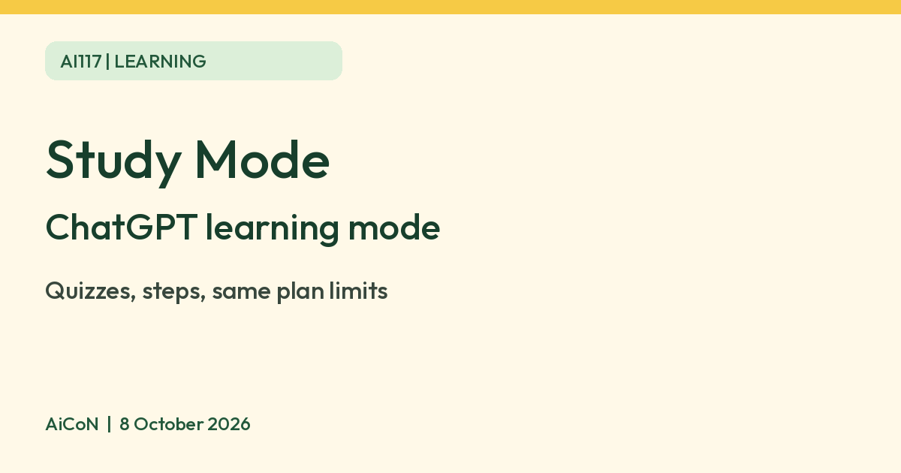

ChatGPT Study Mode: learn, not just get answers
Study Mode is a learning mode inside ChatGPT. Instead of only giving the final answer, it asks questions, explains in layers and quizzes you. OpenAI says it is available across ChatGPT plans globally on web, iOS and Android, and it can make mistakes.

What it is
Study Mode is a learning experience inside ChatGPT. OpenAI's help page says that instead of only giving a final answer, ChatGPT can ask questions, guide your thinking, explain ideas step by step and check your understanding. OpenAI says it is available across ChatGPT plans globally on web, iOS and Android, and for all ChatGPT models.
How to turn it on
| Web | Type @study in the message box, or select + and search "study", then pick Study. You can also go to chatgpt.com/studymode. |
|---|---|
| iPhone | Tap + to open the tools sheet and select Study. You can also type @study. |
| Android | Tap + then Plugins, then search for and select Study. You can also type @study. |
| Turn off | Remove the Study icon from the message box. |
OpenAI says Study Mode works in regular chats and Temporary Chats, but not in GPT or Project conversations.
What it can do, per OpenAI
- Guide you with questions instead of handing over the answer straight away.
- Explain in layers, starting simple and going deeper when you ask.
- Quiz you one question at a time, give feedback and explain what to review.
- Use your uploads: class notes, a syllabus, a worksheet, slides, a textbook excerpt or a photo of a problem.
- Personalise with Memory if it is on, which you can turn off in Settings, then Personalization.
- Work with voice dictation and voice conversations where your app has them.
A good first message
OpenAI suggests including your level, the exact topic, what you are trying to do, what you already understand and any test date. One of its example prompts: "I am learning algebra and keep getting stuck on factoring quadratics. Walk me through one example, then give me a similar one to try myself."
Limits to know
- OpenAI says Study Mode can make mistakes. Double-check important information, especially for homework, exams, health, legal or financial topics.
- Study Mode uses the same plan, model, message and rate-limit rules as the rest of ChatGPT. It does not add extra messages or bypass limits, so the free plan limits still apply.
- For graded work, OpenAI says to follow your school's or instructor's AI-use policy.
- For a linked teen account, a parent may set chats to start in Study Mode. Some education workspaces can require it.
- We did not check current free-plan message limits or any INR price.
Frequently asked questions
Is Study Mode free?
OpenAI says it is available across ChatGPT plans and follows the same limits as your plan. We did not check the exact free limits.
Does it do my homework for me?
It is designed to guide you step by step. Follow your school's AI policy for graded work.
Can I upload a photo of a problem?
OpenAI lists a photo of a math or science problem as supported.
Is it always right?
No. OpenAI says it can make mistakes.
Sources: OpenAI Help Center: Using Study Mode in ChatGPT. Checked 8 October 2026.